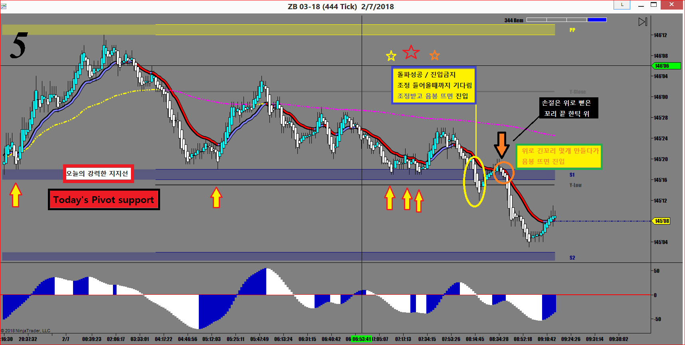

이 매매기법은 장중에서 매수세와 매도세의 힘겨루기 중 발생하는 돌파일 경우에 해당되는 상황이고
경제지표 발표나 장세에 큰 영향을 미칠만한 큰 뉴스가 터져서 급락 급등할 때는 적용할 수 없음
재료로 폭락 폭등때는 무조건 끼어들어가야 함
장중에 주가가 움직이다가 어느 지점에서 여러번 부딪치는데 돌파를 못하고
계속해서 뒤로 밀렸다가 다시 시도하고 하는 강력한 지지(저항)포인트가 있음
항상 그날의 고점 저점등을 추세선으로 그어가면서 오늘의 지지(저항)을 찾는것이 매우 중요함
이런 포인트에서 여러번 시도하다 결국은 돌파할 때 매매하는 방법
바로 따라들어가도 되지만 아주 중요한 지지(저항)인 경우 적폐의 반격이 항상 뒤따름
잘못하면 들어가자마자 손절에 걸림
일단은 기다려서 첫번째 눌림목 나올 때 들어가는게 정석임

일단 진입하고나면 직전고점(저점)에서 한틱 위(아래)가 손절 포인트임
돌파매매를 이런식으로 진입하면 그나마 안전함
손절도 짧게 잡을 수 있어서 실패해도 손실이 미미함
만약 돌파해서 틈도 안주고 계속 가버리면?
그건 내것이 아니구나 하면서 욕심을 버리면 되는 것
매매중에 찾아오는 수많은 매매챤스가 있는데 어떤 이유로든지 그냥 보내고나서
주가가 잘나가면 가슴이 싸...해짐
이제것 기다렸는데 막상 챤스에서 못들어가다니...또 얼마나 기다려야 되나...
하지만...
오늘 매매일지에 왜 그 챤스를 놓쳤는지 자세히 기록해서
다음번에는 절대로 놓치지 않는게 최선의 방법임
Discipline
Discipline
Discipline
끊임없이 노력하고 공부하고 연습하면
반드시 좋은 날이 온다는 믿음을 가져야 함